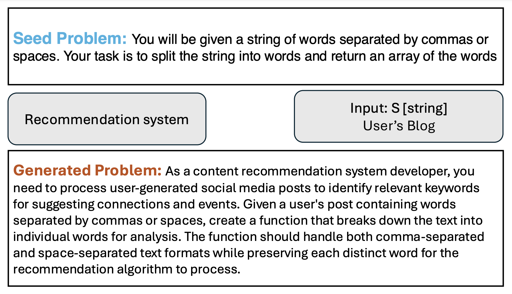

Introduction
DyCodeEval is a novel dynamic benchmarking suite that employs multiple agents
to generate a set of diverse semantically equivalent problems in order to provide transparent contamination-free
evaluation on code LLMs. Below is an example of a problem that was generated by DyCodeEval
from the seed programming problem.

Design Overview

DyCodeEval uses four different agents to generate a diverse problem set:
Scenario Proposer, Context Generator, Prompt Rewriter, Validator. The Scenario Proposer
selects scenarios from a predefined pool and uses them to iteratively generate more scenarios
through LLM prompting. The Context Generator selects a scenario at random and assigns
contextual information to each input variable of the problem based on the chosen scenario. The
Prompt Rewriter uses the contextual information and scenario to rewrite the original programming
problem. The Validator then determines whether the original and newly generated problem are consistent
in core concept and solution.
Contaminated Model Evaluation

To determine the extent of model contamination and the validity of DyCodeEval, we ran
experiments with three different models where we simulated model contamination by finetuning the model with increasing
percentages of the dataset. From the top row, we can see that all the models that are finetuned with a specific leaked
dataset increase in accuracy rapidly when evaluated on that dataset. However, in the bottom row, we see that even though
the dataset is leaked, the models maintain the same accuracy due to DyCodeEval:
our dynamic benchmarking method.
On-the-Wild Benchmarking

We further evaluate DyCodeEval on 12 more on-the-wild code LLMs. We observe that for
both datasets, the overfitted model appears as an outlier while the original models Pass@1
scores maintain a linear relationship.
Stability Assessment

Since DyCodeEval generates a unique benchmarking dataset each time, we run a
stability assessment to determine if consistency is maintained. We find that the variance in benchmarking
scores is minimal to the mean when Pass@1 is measured after being run 10 different
times demonstrating DyCodeEval's stability.